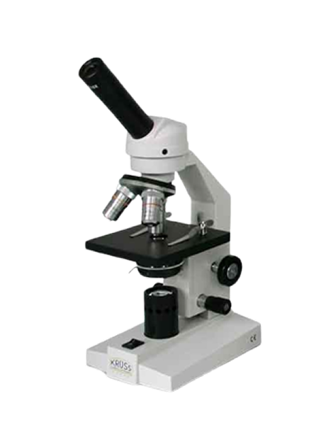

Mengembangkan solusi mikroskop berbiaya rendah dengan presisi tinggi untuk mendukung diagnosis Tuberkulosis (TBC) yang lebih cepat dan akurat di Indonesia.

Visualisasi jelas basil TBC berukuran mikrometer.
Komponen modular yang mudah dicetak dan diperbaiki.
Sistem digital otomatis untuk kontrol dan pencatatan.
Akses penuh desain dan kode untuk kolaborasi.
Alternatif diagnosis berkualitas dengan biaya rendah.